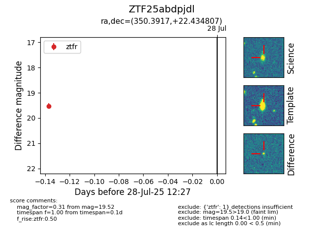

Target ZTF25abdpjdl at 2025-07-28 12:27, see:
FINK: fink-portal.org/ZTF25abdpjdl
Lasair: lasair-ztf.lsst.ac.uk/objects/ZTF25abdpjdl
ALeRCE: alerce.online/object/ZTF25abdpjdl
alt names
ZTF25abdpjdl (ztf,fink)
coordinates:
equatorial (ra, dec) = (350.3917,+22.43481)
galactic (l, b) = (97.0832,-35.88562)
photometry
last ztfr=19.52
1 ztfr detections
